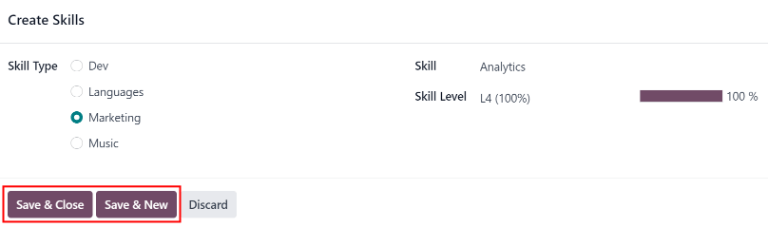

Create a new employee¶
When a new employee is hired, the first step is to create a new employee record. Starting in the app dashboard, click the New button and a new employee form appears. Fill out the required information and any additional details.

Note
The current company phone number and name is populated in the Work Phone and Company fields.
General information¶
The employee form automatically saves as data is entered, but the save manually icon (a could with an up arrow inside it) may be clicked at any time to manually save the form.
Required fields¶
Name: Enter the employee’s name.
Company: Select the company from the drop-down menu that the new employee is hired by, or create a new company by typing the name in the field.

Optional fields¶
Photo: In the top right image box of the employee form, click on the ✏️ (pencil) edit icon to select a photo to upload.
Job Position: Enter the employee’s job position title under their name, or select the job position from the Job Position drop-down menu to have this field auto-populate. The Job Position field under the employee name can be modified and does not need to match the selection made in the Job Position drop-down.
Example
It is recommended to have the job positions match, but if desired, the typed-in description in this field can contain more information than the selected drop-down job position.
An example where this may be applicable is if someone is hired for a sales representative position configured as Sales Representative in the Recruitment app, and that is selected for the drop-down Job Position field.
In the typed in job position field beneath the employee’s name, the position could be more specific, such as
Sales Representative - Subscriptionsif the employee is focused solely on subscription sales.
Tags: Click on a tag in the drop-down menu to add any tags applicable to the employee. Any tag can be created in this field by typing it in. Once created, the new tag is available for all employee records. There is no limit to the amount of tags that can be added.
Work Contact Information: Enter the employee’s Work Mobile, Work Phone, Work Email, and/or Company name.
Department: Select the employee’s department from the drop-down menu.
Job Position: Select the employee’s job position from the drop-down menu. Once a selection is made, the Job Position field beneath the employee’s name automatically updates to reflect the currently selected job position. These positions are from the Recruitment application, and reflect the currently configured job positions.
Manager: Select the employee’s manager from the drop-down menu.
Coach: Select the employee’s coach from the drop-down menu.
Next Appraisal Date: This date automatically populates with a date that is computed according to the settings configured in the Appraisals application. This date can be modified using the calendar selector.
Note
After a Manager is selected, if the Coach field is blank, the selected manager automatically populates the Coach field.
Tip
To make edits to the selected Department, Manager, Coach, or Company, click the Internal Link arrow next to the respective selection. The Internal Link arrow opens the selected form, allowing for modifications. Click Save after any edits are made.
Additional information tabs¶
Resumé tab¶
Resumé¶
Next, enter the employee’s work history in the Resumé tab. Each resumé line must be entered individually. When creating an entry for the first time, click Create a new entry, and the Create Resumé lines form appears. After an entry is added, the Create a new entry button is replaced with an Add button. Enter the following information for each entry.

Title: Type in the title of the previous work experience.
Type: From the drop-down menu, select either Experience, Education, Side Projects, Internal Certification, Completed Internal Training, or type in a new entry, then click Create “(new entry)”.
Display Type: Select either Classic, Certification, or Course from the drop-down menu.
Date Start and Date End: Enter the start and end dates for the work experience. To select a date, use the < (left) and > (right) arrow icons to scroll to the desired month, then click on the day to select it.
Description: Enter any relevant details in the field.
Once all the information is entered, click the Save & Close button if there is only one entry to add, or click the Save & New button to save the current entry and create another resumé line.
Note
After the new employee form is saved, the current position and company is automatically added to the Resumé tab, with the end date listed as current.
Skills¶
An employee’s skills can be entered in the Resumé tab in the same manner that a resumé line is created. When creating a skill for the first time, click the Create a new entry button under Skills and a Create Skills form appears. After a skill is added, the Create a new entry button is replaced with an Add button. Enter the following information for each skill.
Skill Type: Select a skill type by clicking the radio button next to the skill type.
Skill: After selecting a Skill Type, the corresponding skills associated with that selected Skill Type appear in a drop-down menu. For example, selecting Language as the Skill Type presents a variety of languages to select from under the Skills field. Select the appropriate pre-configured skill, or type in a new skill, then click Create “(new skill)”.
Skill Level: Pre-defined skill levels associated with the selected Skill Type appear in a drop-down menu. First, select a Skill Level, then the progress bar automatically displays the pre-defined progress for that specific skill level. Skill levels and progress can be modified in the Skill Level pop-up form, which is accessed via the Internal Link arrow next to Skill Level field.
Once all the information is entered, click the Save & Close button if there is only one skill to add, or click the Save & New button to save the current entry and immediately create a new entry.
To delete any line from the Resumé tab, click the 🗑️ (trash can) icon to delete the entry. Add a new line by clicking the Add button next to the corresponding section.
Skill Types¶
In order to add a skill to an employee’s form, the Skill Types must be configured. Go to to view the currently configured skill types and create new skill types. Click New and a new Skill Type form appears. Fill out all the details for the new skill type. Repeat this for all the skill types needed.
Skill Type: Enter the name of the skill type. This will act as the parent category for more specific skills and should be generic.
Skills: Click Add a line and enter the name for the new skill, then repeat for all other needed skills.
Levels: Click Add a line and a Create Levels form appears. Enter the name of the level, and assign a number for the Progress percentage (0-100) for that level. Click Save & New to save the entry and add another level, or click Save & Close to save the level and close the form. Once all the levels are entered, click the Save manually icon at the top of the screen. Next, select a default level for this skill type. Click Set Default on the line to be the default value. This is typically the lowest level, but any level can be set as the default. A check mark appears in the Default Level column, indicating which level is the default.
Example
To add a math skill set, enter
Mathin the Name field. Next, in the Skills field, enterAlgebra,Calculus, andTrigonometry. Last, in the Levels field enterBeginner,Intermediate, andExpert, with the Progress listed as25,50, and100, respectively. Then, click Save & Close, then click the Save manually icon at the top. Last, click Set Default on theBeginnerline to set this as the default skill level.
Work Information tab¶
The Work Information tab is where the employee’s specific job related information is housed. Their working schedule, various roles, who approves their specific requests (time off, timesheets, and expenses), and specific work location details are listed here. Click on the Work Information tab to access this section, and enter the following information for the new employee.
Location: Select the Work Address from the drop-down menu. To modify the address, hover over the first line (if there are multiple lines) of the address to reveal an Internal Link arrow. Click the Internal Link arrow to open up the company form, and make any edits. Use the breadcrumb menu to navigate back to the new employee form when done. If a new work address is needed, add the address by typing it in the field, then click Create (new address) to add the address, or Create and edit… to add the new address and edit the address form.
Approvers: In order to see this section, the user must have either Administrator or Officer: Manage all employees rights set for the Employees application. Using the drop-down menus, select the users responsible for approving Expenses, Time Off, and Timesheets for the employee. Hover over any of the selections to reveal the Internal Link arrow. Click the Internal Link arrow to open a form with the approver’s Name, Email Address, Company, Phone, Mobile, and Default Warehouse fields. These can be modified, if needed. Use the breadcrumb menu to navigate back to the new employee form when done.
Homeworking: Using the drop-down menu, select the specific location the employee will work from, for each day of the week. The default options are Home, Office, or Other. A new location can be typed into the field, then click either Create (new location) to add the location, or Create and edit… to add the new location and edit the form. After edits are done, click Save & Close, and the new location is added, and populates the field. For days the employee does not work, for example, Saturday and Sunday, leave the field blank (Unspecified).
Note
It is also possible to add or modify work locations by navigating to . Click New to create a new location, then enter the details on the form. To modify a location, click on an existing location, then make any changes on the form.
Schedule: Select the Working Hours and Timezone for the employee. The Internal Link arrow opens up a detailed view of the specific daily working hours. Working hours can be modified or deleted here.
Note
Working hours can also be modified in the Payroll application, where they are referred to as Working Schedules. For more information on how to create or modify Working Schedules in Payroll, refer to the Payroll documentation.
Planning: Click on a role from the drop-down menu for both the Roles and the Default Role fields to add a role. There is no limit to the amount of Roles that can be selected for an employee, but there can only be one Default Role. The default role is the typical role that the employee performs, where the Roles are all the specific roles the employee is able to perform. The Default Role must be selected as a Role, if not, when the Default Role is selected, that role is automatically added to the list of Roles.
Tip
The Planning section affects the Planning app, and will only appear if the Planning app is installed. When planning work in the Planning app, employees can only be scheduled for specific work that corresponds to their selected roles. For example, only an employee with a Functional Tester role can be assigned to perform any activity that requires a Functional Tester.
Important
The users that appear in the drop-down menu for the Approvers section must have Administrator rights set for the corresponding human resources role. To check who has these rights, go to . Click on an employee, and check the Human Resources section of the Access Rights tab.
In order for the user to appear as an approver for Expenses, they must have either Team Approver, All Approver, or Administrator set for the Expenses role.
In order for the user to appear as an approver for Time Off, they must have either Officer or Administrator set for the Time Off role.
In order for the user to appear as an approver for Timesheets, they must have either Manager, Officer, or Administrator set for the Payroll role.
Note
Working Hours are related to a company’s working times, and an employee cannot have working hours that are outside of a company’s working times.
Each individual working time is company-specific, so for multi-company databases, each company needs to have its own working hours set.
If an employee’s working hours are not configured as a working time for the company, new working times can be added, or existing working times can be modified. To add or modify a working time, go to the , and add a new working time or edit an existing one.
After the new working time is created, or an existing one is modified, select the employee’s working hours using the drop-down menu in the Schedule section of the Work Information tab.
Private Information tab¶
No information in the Private Information tab is required to create an employee, however, some information in this section may be critical for the company’s payroll department. In order to properly process payslips and ensure all deductions are accounted for, the employee’s personal information should be entered.
Here, the employee’s Private Contact, Education, Work Permit, Family Status, Emergency contact, and Citizenship information is entered. Fields are entered either using a drop-down menu, activating a check box, or typing in the information.
Private Contact: Enter the personal Address for the employee. The selection can be made with the drop-down menu. If the information is not available, type in the name for the new address. To edit the new address, click the Internal Link arrow to open the address form. On the address form, enter or edit the necessary details. Some other information in the Private Contact section may auto-populate, if the address is already listed in the drop-down menu.
Enter the employee’s Email address and Phone number in the respective fields. Next, enter the employee’s Bank Account Number using the drop-down menu. If the bank is not already configured (the typical situation when creating a new employee) enter the bank account number, and click Create and edit... A Create Bank Account Number form loads. Fill in the information, then click Save & Close.
Then, select the employee’s preferred Language from the drop-down menu. Next, enter the Home-Work Distance in the field. This field is only necessary if the employee is receiving any type of commuter benefits. Lastly, enter the employee’s license plate information in the Private Car Plate field.
Education: Select the highest level of education completed by the employee from the Certificate Level drop-down menu. Options include Graduate, Bachelor, Master, Doctor, or Other. Type in the Field of Study, and the name of the School in the respective fields.
Work Permit: If the employee has a work permit, enter the information in this section. Type in the Visa No (visa number) and/or Work Permit No (work permit number) in the corresponding fields. Using the calendar selector, select the Visa Expire Date and/or the Work Permit Expiration Date to enter the expiration date(s). If available, upload a digital copy of the work permit document. Click Upload Your File, navigate to the work permit file in the file explorer, and click Open.
Family Status: Select the current Marital Status using the drop-down menu, either Single, Married, Legal Cohabitant, Widower, or Divorced. If the employee has any dependent children, enter the Number of Dependent Children in the field.
Emergency: Type in the Contact Name and Contact Phone number of the employee’s emergency contact in the respective fields.
Citizenship: This section contains all the information relevant to the citizenship of the employee. Some fields use a drop-down menu, as the Nationality (Country), Gender, and Country of Birth fields do. The Date of Birth uses a calendar selector to select the date. First, click on the name of the month, then the year, to access the year ranges. Use the < (left) and > (right) arrow icons, navigate to the correct year range, and click on the year. Next, click on the month. Last, click on the day to select the date. Type in the information for the Identification No (identification number, Passport No (passport number), and Place of Birth fields. Last, if the employee is not a resident of the country they are working in, activate the check box next to the Non-resident field.
HR Settings tab¶
This tab provides various fields for different information, depending on the country the company is located. Different fields are configured for different locations, however some sections appear regardless.
Status: Select an Employee Type and, if applicable, a Related User, with the drop-down menus. The Employee Type options include Employee, Student, Trainee, Contractor, or Freelancer.
Important
Employees do not also need to be users. Employees do not count towards the Odoo subscription billing, while Users do count towards billing. If the new employee should also be a user, the user must be created. After the User is created and saved, the new user will appear in the Related User field.
After the employee is created, create the user. Click the ⚙️ (gear) icon, then click Create User. A Create User form appears. Type in the Name and Email Address, and then select the Company from the drop-down menu. Click Save after the information is entered, and the employee record is automatically updated with the newly created user populating the Related User field.
Users can also be created manually. For more information on how to manually add a user, refer to the Users document.
Payroll: If applicable, enter the Registration Number of the Employee in this section. The Attestation (N-1) and Attestation (N) sections appear only for Belgian companies, and will not be visible for other locations. These sections log the days that will be paid to the new employee. Enter any Amount to recover, Number of days, and Recovered Amount of Holiday Attest (year) - Simple Holiday Pay from previous employer to recover in (year), for both N and N-1 categories. For the Holiday Attest (year) - Previous occupation for Double Holiday Pay Recovery in (year) section, click Add a line, and enter the number of Months, the Amount, and Occupation Rate. Repeat for all entries. Click the 🗑️ (trash can) icon to delete a line.
SD WORX: Enter the employee’s seven digit SDWorx code in this field, if applicable.
Attendance/Point of Sale/Manufacturing: The employee’s PIN Code and Badge ID can be entered here, if the employee needs/has one. Click Generate next to the Badge ID to create a badge ID. The PIN Code is used to sign in and out of the Attendance app kiosk, and a POS system.
Application Settings: Enter the employee’s Hourly Cost in a XX.XX format. This is factored in when the employee is working at a work center. This value affects the manufacturing costs for a product, if the value of the manufactured product is not a fixed amount. This value does not affect the Payroll application. If applicable, enter the Fleet Mobility Card number.
Documents¶
All documents associated with an employee are stored in the Documents app. The number of documents associated with the employee appear in the Documents smart button above the employee record. Click on the smart button, and all the documents appear. For more information on the Documents app, refer to the Documents documentation.